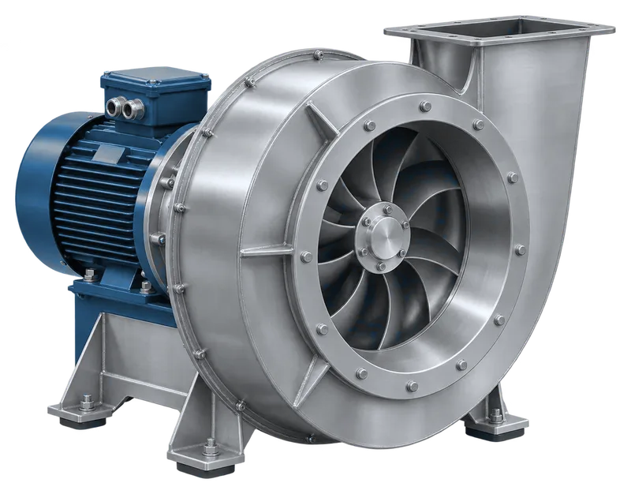
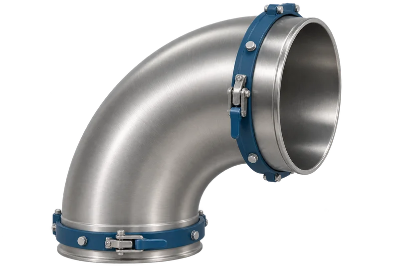
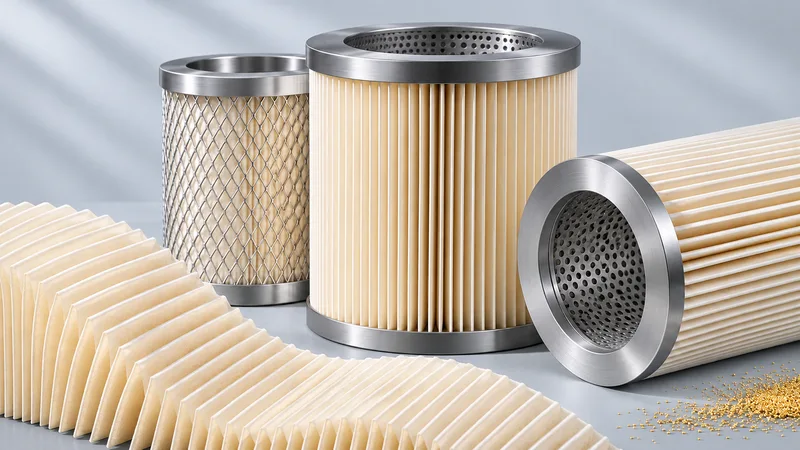
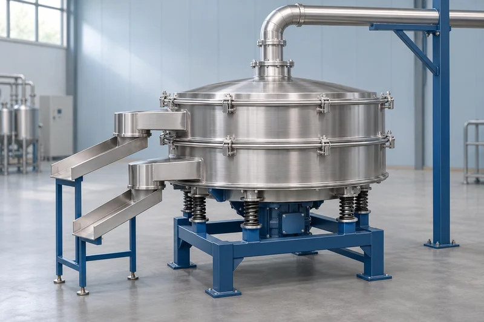
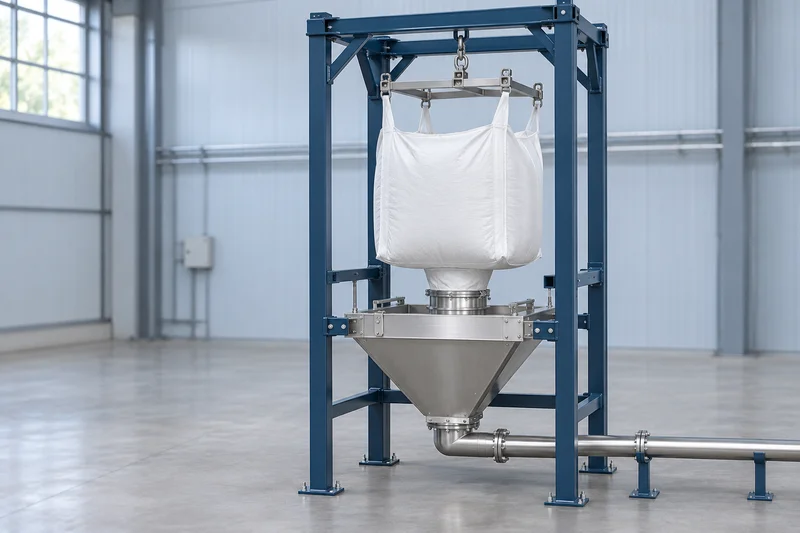
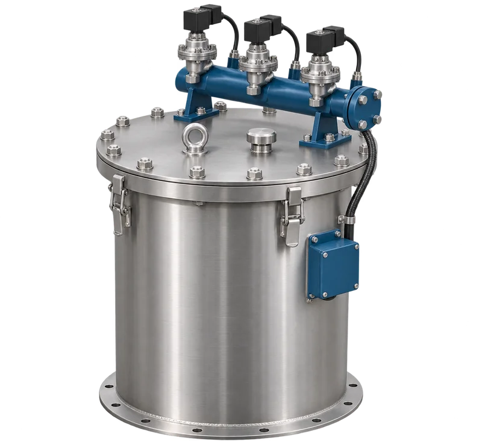

Pressure or vacuum conveying?
Follow the powder from pick-up point to destination and compare the role of positive and negative pressure in your pipe route.
Read article: Pressure or vacuum conveying?




How do you choose a conveying bend? When is a filter due for replacement? Find the considerations, measured data and practical examples for your installation.

Follow the powder from pick-up point to destination and compare the role of positive and negative pressure in your pipe route.
Read article: Pressure or vacuum conveying?
Select a blower or fan by air flow, pressure difference and operating conditions. Compare principles and prepare your technical selection.
Read article: Selecting the right blower?
Investigate wear in conveying bends. Read what the location of the wear tells you and when a different bend type, wall material or pipe route makes sense.
Read article: Why does a conveying bend wear?
Assess filter replacement on the basis of pressure difference, air flow and leakage. From the first signal to a targeted inspection of your dust filter.
Read article: When do you replace your filters?
When does a cyclone relieve your dust filter? Assess the particle size distribution, dust load and available fan pressure with a practical worked example.
Read article: When is a cyclone worthwhile as a pre-separator?
Choose an industrial screen for check screening or classification. Read how to assess mesh size, product loss and capacity in a trial with your own material.
Read article: Choosing a check screener or a grading screen?
A big bag empties slowly or in surges. Recognise the difference between bridging, a pinched spout and a limitation in the discharge.
Read article: Big bag discharge: why does the product flow falter?
Read how a vent filter works during pneumatic filling, why the final phase needs attention and which data you need for filter selection.
Read article: How does silo venting work during pneumatic filling?
Choose a rotary valve for free discharge or feeding into a conveying line. Compare the product route, available installation height, capacity and leakage air.
Read article: Choosing a drop-through or blow-through valve?